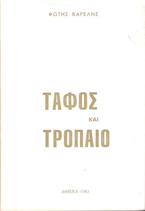

... μακρά οδός απανδόκευτος ...
Για όσους νικούν υπάρχει το στεφάνι της νίκης.
Για τους ωραίους και γενναίους και υγιείς
καλή συνοδεύτρα η ομορφιά τους
μέσα στην ευτυχία των ανθρώπων,
Και για όσους είναι σκλάβοι της δουλιάς
κι απ' την ανάγκη που τους δέρνει,
ξαπλώνουν πολλά βράδια,
με την έγνια του μυαλού στην Τύχη ή την Ελπίδα,
και γι' αυτούς υπάρχει κάποιο δώρο απ' τη ζωή μας,
αφού καινούργια η κάθε μέρα ξημερώνει.
Ένθα, λοιπόν, ουκ έστι πόνος
ού στεναγμός, ω μελωδέ!
χωρίς το <<αλλά>>
Η έστω μ' εκείνο,
όμως, όχι ζωή, Γ α λ ή ν η!...